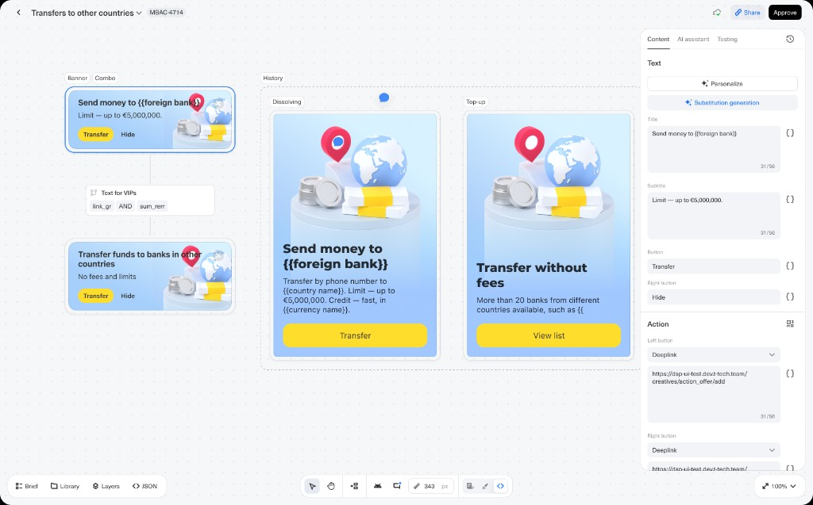

Designed a family of in-app promotional cards that explain international transfers, surface limits and fee-free options, and drive users into the transfer flow via deeplinks.

The mobile banking app needed clear, trustworthy touchpoints for a high-stakes product: sending money to foreign banks. Users had to understand limits, speed, fees, and supported destinations before tapping through to the transfer flow.
I designed a modular card system for the in-app feed: compact banners for quick actions, richer combo cards with illustration and primary CTA, and supporting patterns for history and top-up contexts. Copy is templated with placeholders — {{foreign bank}}, {{country name}}, {{currency name}} — so marketing can localize and personalize at scale without redesigning layouts.
A shared visual language — light blue surfaces, 3D globe-and-cash illustration, yellow primary buttons — ties every variant together. Each format optimizes for its placement:
Actions are configured as deeplinks into the transfer and bank-list flows, with character budgets enforced in the content editor (e.g. title 31/56) so copy never breaks the layout.
Lead Product Designer — end-to-end UX and UI for card layouts, illustration direction, copy structure with placeholders, interaction specs for deeplinks, and handoff to engineering and the in-app content platform. Collaborated with marketing and product on messaging hierarchy and A/B-ready variants.